Online services, done right.
Digital products, design, automation, and resilient web infrastructure — everything you need to launch and grow, without looking unfinished.

Digital products, design, automation, and resilient web infrastructure — everything you need to launch and grow, without looking unfinished.